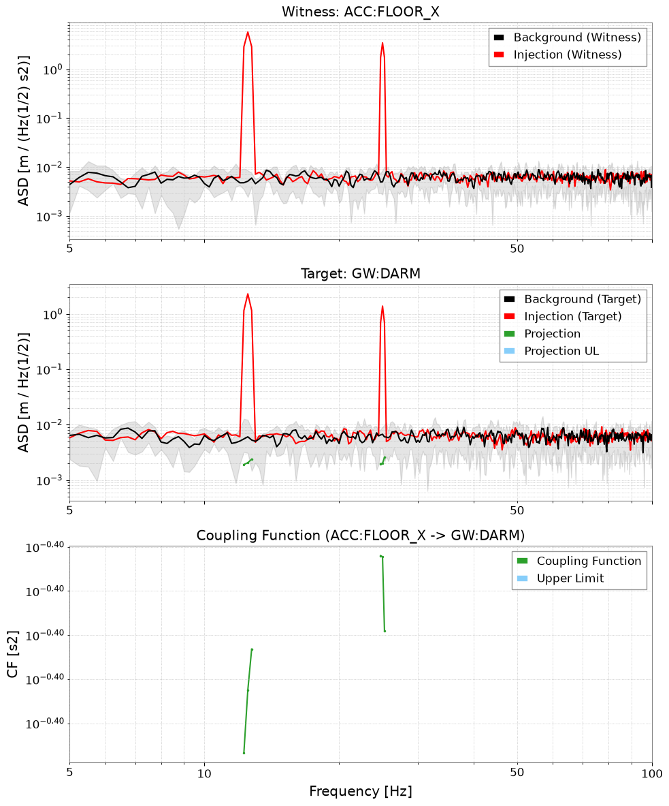
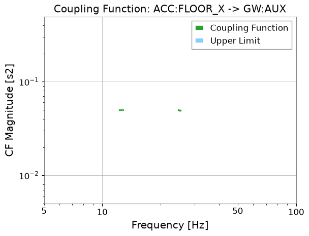
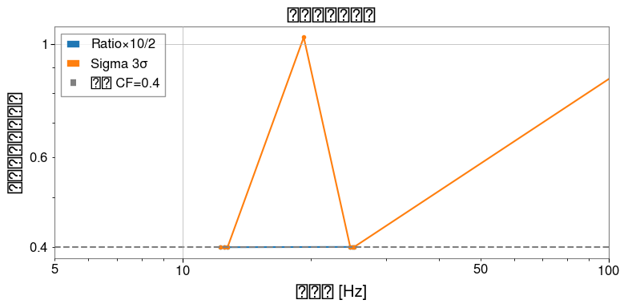
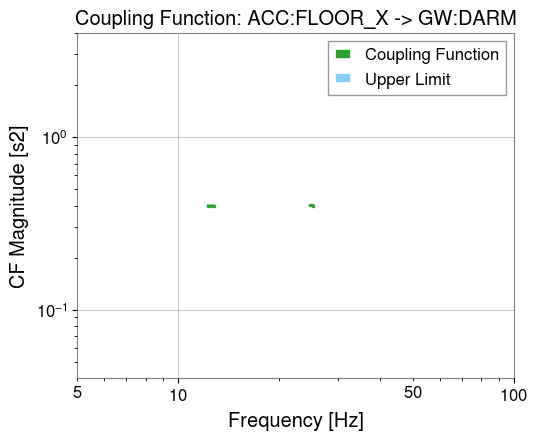

Note
このページは Jupyter Notebook から生成されました。 ノートブックをダウンロード (.ipynb)
[ ]:
# Install gwexpy with pinned versions of core dependencies for reproducibility on Colab
%pip install -q "gwexpy[all]" "gwpy<5.0.0" "numpy<2.0.0" "scipy<1.13.0" "astropy<7.0.0"
カップリング解析: マルチチャンネル結合

このチュートリアルでは gwexpy.analysis.CouplingFunctionAnalysis を使ったカップリング関数（CF）解析のワークフローを解説します。
カップリング関数とは
カップリング関数は、ウィットネス（環境センサー）のノイズがターゲット（感度チャンネル）にどれだけ結合するかを定量化します:
ここで \(P_{\rm inj}\) と \(P_{\rm bkg}\) はそれぞれ注入時・バックグラウンド時のパワースペクトル密度です。
典型的な用途: KAGRA/LIGO/Virgo の PEM（Physical Environment Monitor）インジェクション解析
注意 — SigmaThreshold の統計的妥当性: 平均化セグメント数
n_avgが 10 未満の場合、χ²(2K) 分布のガウス近似の精度が低下します。この場合UserWarningが発生します。短いデータセグメントではPercentileThresholdの使用を検討してください。
[1]:
import warnings
warnings.filterwarnings("ignore", category=UserWarning)
warnings.filterwarnings("ignore", category=DeprecationWarning)
import matplotlib.pyplot as plt
import numpy as np
from astropy import units as u
from gwexpy.timeseries import TimeSeries, TimeSeriesDict
from gwexpy.analysis.coupling import (
CouplingFunctionAnalysis,
RatioThreshold,
SigmaThreshold,
PercentileThreshold,
)
1. 合成インジェクション／バックグラウンドデータの準備
シミュレーション設定:
ウィットネスチャンネル（環境センサー）: 地震計・音響センサー
ターゲットチャンネル 2 本: 結合強度の異なる感度計
インジェクションではウィットネスにトーン信号を加えます。ターゲットへの応答は結合強度に比例します。
[2]:
rng = np.random.default_rng(0)
fs = 512
T = 32.0
n = int(fs * T)
t = np.arange(n) / fs
dt = (1 / fs) * u.s
f_inj1 = 12.5 # Hz
f_inj2 = 25.0 # Hz
noise_level = 0.1
# バックグラウンドデータ（インジェクションなし）
wit_bkg = rng.normal(0, noise_level, n)
tgt1_bkg = rng.normal(0, noise_level, n)
tgt2_bkg = rng.normal(0, noise_level, n)
# インジェクションデータ（ウィットネスにトーンを加える）
inj_signal = 5.0 * np.sin(2 * np.pi * f_inj1 * t) + 3.0 * np.sin(2 * np.pi * f_inj2 * t)
wit_inj = inj_signal + rng.normal(0, noise_level, n)
# ターゲット 1: 強結合（CF ≈ 0.4）
cf_true1 = 0.4
tgt1_inj = cf_true1 * inj_signal + rng.normal(0, noise_level, n)
# ターゲット 2: 弱結合（CF ≈ 0.05）
cf_true2 = 0.05
tgt2_inj = cf_true2 * inj_signal + rng.normal(0, noise_level, n)
def make_ts(data, name, unit=u.ct):
return TimeSeries(data, dt=dt, t0=0*u.s, unit=unit, name=name)
data_bkg = TimeSeriesDict({
"ACC:FLOOR_X": make_ts(wit_bkg, "ACC:FLOOR_X", u.m / u.s**2),
"GW:DARM": make_ts(tgt1_bkg, "GW:DARM", u.m),
"GW:AUX": make_ts(tgt2_bkg, "GW:AUX", u.m),
})
data_inj = TimeSeriesDict({
"ACC:FLOOR_X": make_ts(wit_inj, "ACC:FLOOR_X", u.m / u.s**2),
"GW:DARM": make_ts(tgt1_inj, "GW:DARM", u.m),
"GW:AUX": make_ts(tgt2_inj, "GW:AUX", u.m),
})
print("バックグラウンドチャンネル:", list(data_bkg.keys()))
バックグラウンドチャンネル: ['ACC:FLOOR_X', 'GW:DARM', 'GW:AUX']
2. カップリング関数解析の実行
CouplingFunctionAnalysis.compute() にインジェクション・バックグラウンドの TimeSeriesDict とウィットネスチャンネル名を渡します。
[3]:
cfa = CouplingFunctionAnalysis()
results = cfa.compute(
data_inj=data_inj,
data_bkg=data_bkg,
fftlength=4.0,
overlap=0.5,
witness="ACC:FLOOR_X",
threshold_witness=RatioThreshold(ratio=10.0),
threshold_target=RatioThreshold(ratio=2.0),
)
print("解析済みターゲット:", list(results.keys()))
解析済みターゲット: ['GW:DARM', 'GW:AUX']
3. 結果の確認
CouplingResult オブジェクトにカップリング関数・上限・診断 PSD が格納されています。
[4]:
res_darm = results["GW:DARM"]
freqs = res_darm.cf.frequencies.value
idx1 = np.argmin(np.abs(freqs - f_inj1))
idx2 = np.argmin(np.abs(freqs - f_inj2))
print(f"有効 CF ビン数: {res_darm.valid_mask.sum()}")
print(f"f_inj1={f_inj1} Hz での CF: {res_darm.cf.value[idx1]:.3f} (期待値 ~{cf_true1})")
print(f"f_inj2={f_inj2} Hz での CF: {res_darm.cf.value[idx2]:.3f} (期待値 ~{cf_true1})")
res_darm.plot_cf(xlim=(5, 100));
有効 CF ビン数: 6
f_inj1=12.5 Hz での CF: 0.400 (期待値 ~0.4)
f_inj2=25.0 Hz での CF: 0.401 (期待値 ~0.4)
[5]:
# 3 パネル診断プロット: ウィットネス ASD | ターゲット ASD | CF
res_darm.plot(xlim=(5, 100));

[6]:
# 弱結合チャンネル
res_aux = results["GW:AUX"]
print("GW:AUX の有効 CF ビン数:", res_aux.valid_mask.sum())
res_aux.plot_cf(xlim=(5, 100));
GW:AUX の有効 CF ビン数: 6

import warnings
4. 閾値戦略の比較
gwexpy には 3 種類の組み込み閾値戦略があります:
戦略 |
説明 |
適したデータ |
|---|---|---|
|
\(P_{\rm inj} > r \cdot P_{\rm bkg}\) |
高速スクリーニング・物理的な根拠がある場合 |
|
ガウス統計的有意性検定 |
定常・ガウス背景 |
|
経験的分布 |
非ガウス・グリッチが多い背景 |
[7]:
import warnings
with warnings.catch_warnings():
warnings.simplefilter('ignore')
strategies = {
"Ratio×10/2": (RatioThreshold(10.0), RatioThreshold(2.0)),
"Sigma 3σ": (SigmaThreshold(3.0), SigmaThreshold(2.0)),
}
fig, ax = plt.subplots(figsize=(8, 4))
for label, (thr_w, thr_t) in strategies.items():
res = cfa.compute(
data_inj=data_inj, data_bkg=data_bkg,
fftlength=4.0, overlap=0.5,
witness="ACC:FLOOR_X",
threshold_witness=thr_w, threshold_target=thr_t,
)
cf = res["GW:DARM"].cf
valid = ~np.isnan(cf.value)
ax.plot(cf.frequencies.value[valid], cf.value[valid], marker=".", label=label)
ax.axhline(cf_true1, color="gray", linestyle="--", label=f"真の CF={cf_true1}")
ax.set_xscale("log")
ax.set_yscale("log")
ax.set_xlim(5, 100)
ax.set_xlabel("周波数 [Hz]")
ax.set_ylabel("カップリング関数")
ax.set_title("閾値戦略の比較")
ax.legend()
plt.tight_layout()
mask_wit = threshold_witness.check(
mask_tgt = threshold_target.check(

5. 周波数帯域制限
frange を使うと、カップリング関数の評価を特定の周波数帯に限定できます。
[11]:
results_band = cfa.compute(
data_inj=data_inj,
data_bkg=data_bkg,
fftlength=4.0,
overlap=0.5,
witness="ACC:FLOOR_X",
frange=(10.0, 50.0),
)
cf_band = results_band["GW:DARM"].cf
valid_band = ~np.isnan(cf_band.value)
print(f"10-50 Hz の有効 CF ビン数: {valid_band.sum()}")
results_band["GW:DARM"].plot_cf(xlim=(5, 100));
10-50 Hz の有効 CF ビン数: 6
<Plot size 640x480 with 1 Axes>
5. 周波数帯域制限
frange を使うと、カップリング関数の評価を特定の周波数帯に限定できます。
[11]:
results_band = cfa.compute(
data_inj=data_inj,
data_bkg=data_bkg,
fftlength=4.0,
overlap=0.5,
witness="ACC:FLOOR_X",
frange=(10.0, 50.0),
)
cf_band = results_band["GW:DARM"].cf
valid_band = ~np.isnan(cf_band.value)
print(f"10-50 Hz の有効 CF ビン数: {valid_band.sum()}")
results_band["GW:DARM"].plot_cf(xlim=(5, 100));
10-50 Hz の有効 CF ビン数: 6
<Plot size 640x480 with 1 Axes>
5. 周波数帯域制限
frange を使うと、カップリング関数の評価を特定の周波数帯に限定できます。
[11]:
results_band = cfa.compute(
data_inj=data_inj,
data_bkg=data_bkg,
fftlength=4.0,
overlap=0.5,
witness="ACC:FLOOR_X",
frange=(10.0, 50.0),
)
cf_band = results_band["GW:DARM"].cf
valid_band = ~np.isnan(cf_band.value)
print(f"10-50 Hz の有効 CF ビン数: {valid_band.sum()}")
results_band["GW:DARM"].plot_cf(xlim=(5, 100));
10-50 Hz の有効 CF ビン数: 6
<Plot size 640x480 with 1 Axes>
5. 周波数帯域制限
frange を使うと、カップリング関数の評価を特定の周波数帯に限定できます。
[11]:
results_band = cfa.compute(
data_inj=data_inj,
data_bkg=data_bkg,
fftlength=4.0,
overlap=0.5,
witness="ACC:FLOOR_X",
frange=(10.0, 50.0),
)
cf_band = results_band["GW:DARM"].cf
valid_band = ~np.isnan(cf_band.value)
print(f"10-50 Hz の有効 CF ビン数: {valid_band.sum()}")
results_band["GW:DARM"].plot_cf(xlim=(5, 100));
10-50 Hz の有効 CF ビン数: 6
<Plot size 640x480 with 1 Axes>
5. 周波数帯域制限
frange を使うと、カップリング関数の評価を特定の周波数帯に限定できます。
[11]:
results_band = cfa.compute(
data_inj=data_inj,
data_bkg=data_bkg,
fftlength=4.0,
overlap=0.5,
witness="ACC:FLOOR_X",
frange=(10.0, 50.0),
)
cf_band = results_band["GW:DARM"].cf
valid_band = ~np.isnan(cf_band.value)
print(f"10-50 Hz の有効 CF ビン数: {valid_band.sum()}")
results_band["GW:DARM"].plot_cf(xlim=(5, 100));
10-50 Hz の有効 CF ビン数: 6
<Plot size 640x480 with 1 Axes>
5. 周波数帯域制限
frange を使うと、カップリング関数の評価を特定の周波数帯に限定できます。
[11]:
results_band = cfa.compute(
data_inj=data_inj,
data_bkg=data_bkg,
fftlength=4.0,
overlap=0.5,
witness="ACC:FLOOR_X",
frange=(10.0, 50.0),
)
cf_band = results_band["GW:DARM"].cf
valid_band = ~np.isnan(cf_band.value)
print(f"10-50 Hz の有効 CF ビン数: {valid_band.sum()}")
results_band["GW:DARM"].plot_cf(xlim=(5, 100));
10-50 Hz の有効 CF ビン数: 6
<Plot size 640x480 with 1 Axes>
5. 周波数帯域制限
frange を使うと、カップリング関数の評価を特定の周波数帯に限定できます。
[11]:
results_band = cfa.compute(
data_inj=data_inj,
data_bkg=data_bkg,
fftlength=4.0,
overlap=0.5,
witness="ACC:FLOOR_X",
frange=(10.0, 50.0),
)
cf_band = results_band["GW:DARM"].cf
valid_band = ~np.isnan(cf_band.value)
print(f"10-50 Hz の有効 CF ビン数: {valid_band.sum()}")
results_band["GW:DARM"].plot_cf(xlim=(5, 100));
10-50 Hz の有効 CF ビン数: 6
<Plot size 640x480 with 1 Axes>
6. 上限値（Upper Limit）
[8]:
cf_ul = res_darm.cf_ul
ul_valid = ~np.isnan(cf_ul.value)
print(f"上限値ビン数: {ul_valid.sum()}")
# plot_cf には CF と上限値が両方表示される
res_darm.plot_cf(xlim=(5, 100));
上限値ビン数: 0

まとめ
from gwexpy.analysis.coupling import CouplingFunctionAnalysis, RatioThreshold
cfa = CouplingFunctionAnalysis()
results = cfa.compute(
data_inj=data_inj, # インジェクション TimeSeriesDict
data_bkg=data_bkg, # バックグラウンド TimeSeriesDict
fftlength=4.0,
witness="ACC:FLOOR_X",
threshold_witness=RatioThreshold(25.0),
threshold_target=RatioThreshold(4.0),
)
res = results["GW:DARM"]
res.plot() # 3 パネル診断プロット
res.cf # FrequencySeries: CF 値
res.cf_ul # FrequencySeries: 上限値
関連チュートリアル: